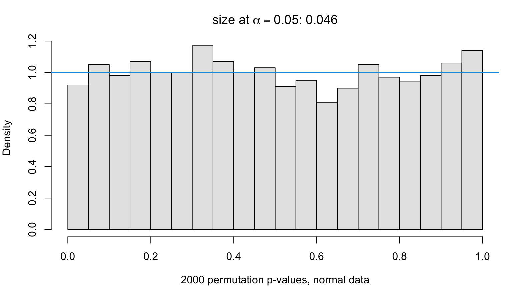
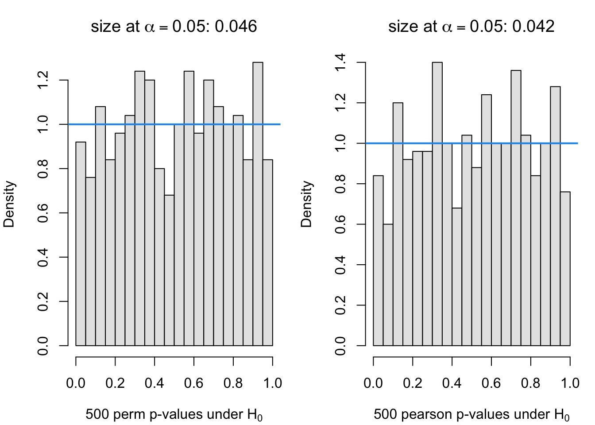
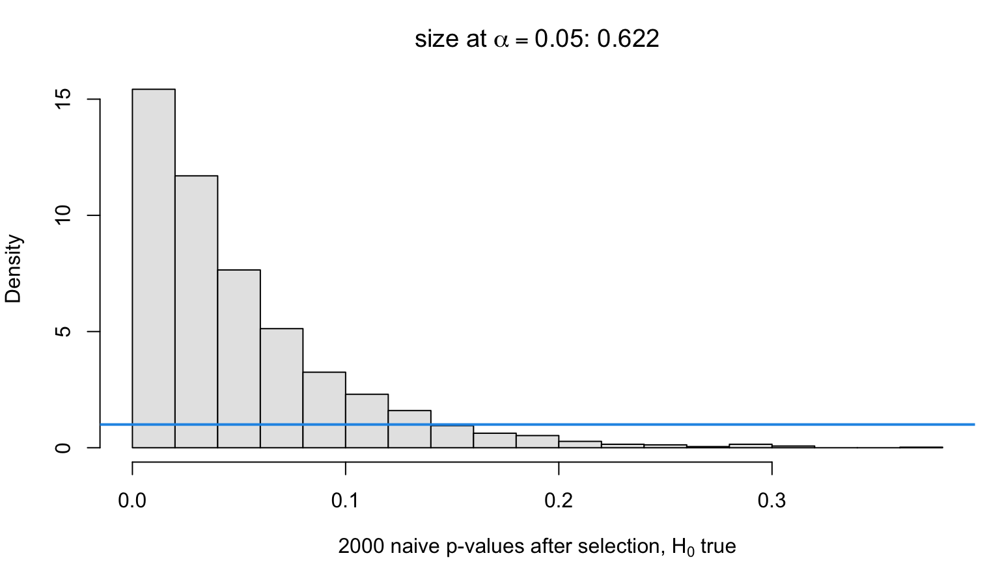
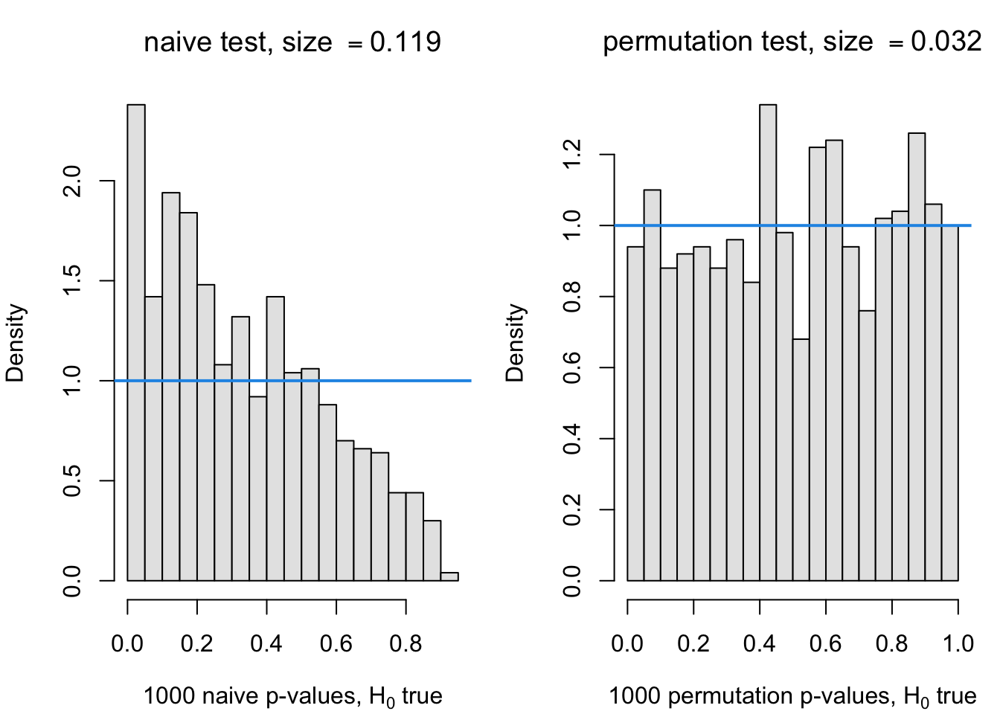
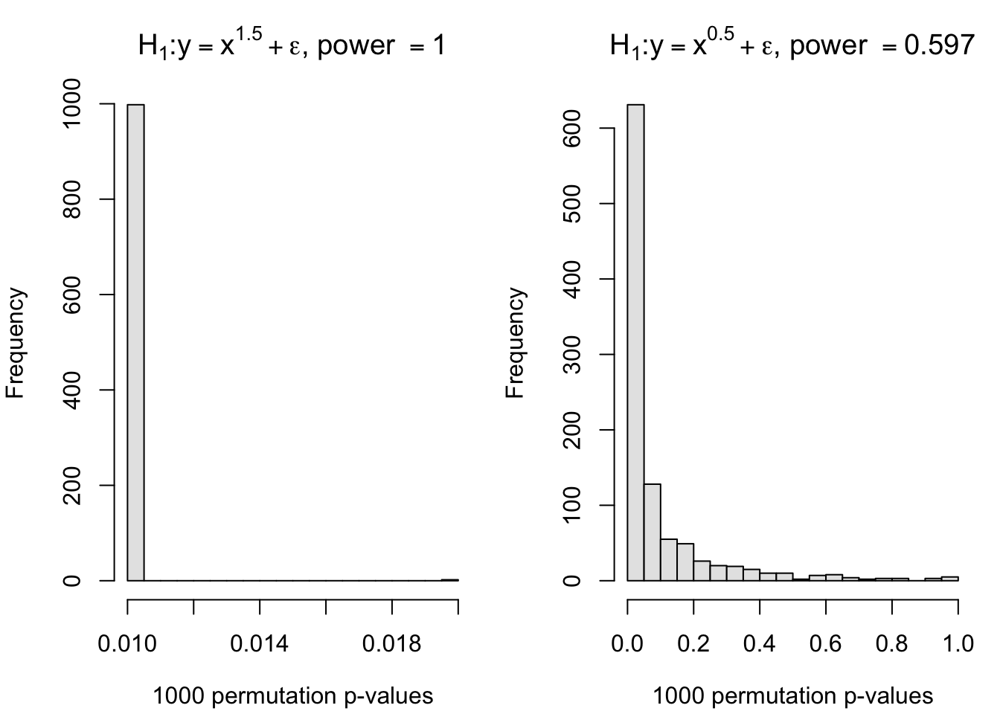

This chapter introduces Monte Carlo methods in two stages. The first half asks how a computer produces “random” numbers at all, and how those numbers are transformed into draws from any distribution we like. The second half puts those draws to work: once we can simulate data, we can estimate almost any quantity — the risk of an estimator, the size or power of a hypothesis test, a p-value with no closed form — simply by repeating an experiment many times and averaging.
4.1 Pseudo Random Numbers
Computers generate “random” numbers using deterministic algorithms. One of the most common methods is the Linear Congruential Generator (LCG). It produces a sequence of pseudo-random integers \(X_n\) defined by the recurrence relation:
\[
X_n = (a X_{n-1} + c) \pmod M
\]
where \(X_0\) is the seed, \(a\) is the multiplier, \(c\) is the increment, and \(M\) is the modulus. To get numbers in the interval \([0,1]\), we divide by \(M-1\). In this example, we use the parameters \(a = 7^5\), \(c = 0\), and \(M = 2^{31}-1\) (a minimal standard LCG).
Code
A <-7^5M <-2^31-1N <-500rn <-rep (0, N)rn[1] <-10# Initial seedfor (i in2:length (rn)){ rn[i] <- (A * rn[i-1] ) %% M}## Scale the numbers to fall between 0 and 1nrn <- rn/(M-1)## Compare with R's built-in runif()n <-500a <-runif(n)par(mfrow=c(2,3),mar=c(4,4,3,1))plot(nrn[1:100], main="Trace Plot", ylab="Value", xlab="Index")acf(nrn, main="Autocorrelation")hist(nrn, main="Histogram")plot.new()hist(a,xlab="Random Numbers",main="Built-in runif()")acf(a,main="Built-in acf")
Figure 4.1: Checks the quality of a pseudo-random number generator written from scratch by comparing it with R’s built-in generator on three diagnostics: behaviour over time, autocorrelation, and uniformity. A hand-rolled linear congruential generator versus R’s built-in runif(): trace plot, autocorrelation, and histogram for each.
4.2 Inverting the CDF
If we can generate uniform random variables \(U \sim \text{Unif}(0,1)\), we can generate a random variable \(X\) from any continuous distribution using the Inverse Transform Method. If \(F(x)\) is the cumulative distribution function (CDF) of \(X\), then \(X = F^{-1}(U)\) has the desired distribution.
For an Exponential distribution with rate \(\lambda = 1\), the CDF is \(F(x) = 1 - e^{-x}\). Setting \(U = 1 - e^{-x}\) and solving for \(x\) gives:
\[
x = -\ln(1-U)
\]
4.3 Shinylive App: Inverse CDF Sampling
#| '!! shinylive warning !!': |
#| shinylive does not work in self-contained HTML documents.
#| Please set `embed-resources: false` in your metadata.
#| standalone: true
#| viewerHeight: 620
#| code-fold: true
library(shiny)
lambda <- 1
xmax <- qexp(0.995, lambda)
grid <- seq(0, xmax, length.out = 400)
ui <- fluidPage(
sidebarLayout(
sidebarPanel(
width = 3,
sliderInput("n", "Points per step (n)", min = 1, max = 50, value = 10, step = 1),
sliderInput("speed", "Play interval (ms)", min = 200, max = 2000, value = 800, step = 100),
actionButton("draw", "Draw more samples", class = "btn-primary", width = "100%"),
br(), br(),
actionButton("play", "Play", width = "100%"),
br(), br(),
actionButton("reset", "Reset", width = "100%"),
hr(),
strong(textOutput("count")),
textOutput("moments")
),
mainPanel(
width = 9,
plotOutput("cdfPlot", height = "280px"),
plotOutput("histPlot", height = "260px")
)
)
)
server <- function(input, output, session) {
rv <- reactiveValues(x = numeric(0), u_last = numeric(0), x_last = numeric(0))
playing <- reactiveVal(FALSE)
draw_step <- function() {
u <- runif(input$n)
xs <- -log(1 - u) / lambda
rv$u_last <- u
rv$x_last <- xs
rv$x <- c(rv$x, xs)
}
observeEvent(input$draw, draw_step())
observeEvent(input$play, {
playing(!playing())
updateActionButton(session, "play", label = if (playing()) "Pause" else "Play")
})
observeEvent(input$reset, {
playing(FALSE)
updateActionButton(session, "play", label = "Play")
rv$x <- numeric(0); rv$u_last <- numeric(0); rv$x_last <- numeric(0)
})
observe({
if (playing()) {
invalidateLater(input$speed, session)
isolate(draw_step())
}
})
output$count <- renderText(paste0("Total draws: ", length(rv$x)))
output$moments <- renderText({
if (length(rv$x) < 2) return("")
sprintf("sample mean = %.3f (true = %.3f)", mean(rv$x), 1 / lambda)
})
output$cdfPlot <- renderPlot({
par(mar = c(4, 4, 2.5, 1))
plot(grid, pexp(grid, lambda), type = "n", ylim = c(0, 1),
xlab = "x", ylab = "u = F(x)",
main = "Draw u on the vertical axis, read x off the CDF")
u <- rv$u_last; x <- rv$x_last
if (length(u) > 0) {
segments(0, u, pmin(x, xmax), u, col = "grey65")
inside <- x <= xmax
segments(x[inside], u[inside], x[inside], 0, col = "grey65")
}
lines(grid, pexp(grid, lambda), col = "steelblue", lwd = 2.5)
if (length(u) > 0) {
points(pmin(x, xmax), u, pch = 16, col = "firebrick", cex = 1.1)
rug(x[x <= xmax], side = 1, col = "firebrick", lwd = 2)
points(rep(0, length(u)), u, pch = 16, col = "grey35", cex = 0.8)
}
})
output$histPlot <- renderPlot({
par(mar = c(4, 4, 2.5, 1))
if (length(rv$x) < 2) {
plot.new()
title(main = "Draw some samples to see the histogram")
return(invisible())
}
hist(rv$x, breaks = 30, freq = FALSE, col = "grey85", border = "white",
xlim = c(0, xmax), xlab = "x", ylab = "density",
main = "Accumulated draws vs. the true Exp(1) density")
curve(dexp(x, lambda), add = TRUE, col = "steelblue", lwd = 2.5)
abline(v = mean(rv$x), col = "firebrick", lwd = 2, lty = 2)
legend("topright", bty = "n", lwd = 2, lty = c(1, 2),
col = c("steelblue", "firebrick"),
legend = c("true density", "sample mean"))
})
}
shinyApp(ui, server)
Figure 4.2: Shinylive App Illustrating the Inverse CDF Method. Demonstrates the inverse-CDF method for generating random numbers from a target distribution by transforming uniform draws. The app below draws samples one step at a time (or continuously via Play), showing on the top panel how each uniform draw \(u\) maps through the CDF to a sample \(x = F^{-1}(u)\), and on the bottom panel how those draws accumulate into a histogram against the true \(\text{Exp}(1)\) density.
4.4 A Special Transformation for Generating Normal Samples
The Box-Muller Transform is an elegant method for generating pairs of independent Standard Normal random variables from independent Uniform random variables. It relies on converting cartesian coordinates \((X,Y)\) into polar coordinates \((R, \theta)\).
If \(X, Y \sim N(0,1)\) are independent, their squared radius \(R^2 = X^2 + Y^2\) follows an Exponential distribution with rate \(\lambda = 1/2\), and their angle \(\theta\) is uniformly distributed over \([0, 2\pi]\). By generating \(R\) and \(\theta\), we can map them back to Normal variables:
\[
X = R\cos(\theta) \quad \text{and} \quad Y = R\sin(\theta)
\]
Code
gen_normal <-function(n){# calculates size of random samples (we generate pairs, so we need half) size_sample <-ceiling(n/2)# R^2 ~ Exp(1/2), so we take the square root to get R R <-sqrt(2*rexp(size_sample)) theta <-runif(size_sample,0,2*pi) X <- R*cos(theta) Y <- R*sin(theta)c(X,Y)[1:n]}normal_sample <-gen_normal(1000)## R's built-in generator for comparisonnsample2 <-rnorm (1000)par(mfrow=c(2,2),mar=c(4,4,2,1))hist(normal_sample,main="Custom Normal")qqnorm(normal_sample, main="Custom QQ")qqline(normal_sample)hist(nsample2, main="Built-in Normal")qqnorm(nsample2, main="Built-in QQ")qqline(nsample2)
Figure 4.3: Shows how uniform random numbers can be transformed into normal ones, and verifies the Box-Muller construction against R’s rnorm(). Normal samples generated by the Box-Muller transform, compared with R’s built-in rnorm(): histogram and QQ plot for each.
4.5 Demonstration of CLT and LLN
The Law of Large Numbers (LLN) states that as the sample size \(n\) grows, the sample mean \(\bar{X}_n\) converges to the expected value \(\mu\): \[
\bar{X}_n \to \mu \quad \text{as} \quad n \to \infty
\]
The Central Limit Theorem (CLT) states that the standardized sample mean converges in distribution to a Standard Normal \(N(0,1)\): \[
Z = \frac{\bar{X}_n - \mu}{\sigma/\sqrt{n}} \xrightarrow{d} N(0,1) \quad \text{as} \quad n \to \infty
\]
Here we draw from a Gamma distribution with shape parameter \(\alpha = 2\) and rate \(\beta = 1\). The theoretical mean is \(\mu = \alpha/\beta = 2\), and the variance is \(\sigma^2 = \alpha/\beta^2 = 2\).
Code
n <-100rn <-rgamma(n, shape =2)par(mfrow =c(2,2))plot(rn[1:100], main="Raw Gamma Draws", ylab="Value")hist(rn, main="Histogram of Draws")## Calculate running averages (LLN)xbar.rep <-replicate(5, cumsum(rgamma(n, shape =2))/(1:n))## Calculate running standardized means (CLT)se.rep <-replicate(5, (cumsum(rgamma(n, shape =2))/(1:n) -2) /sqrt(2/(1:n)))## Plot LLN: should converge to mu = 2plot(xbar.rep[,1], main ="Demonstrating LLN", log ="x", type ="b", ylim =c(0, 6), ylab="Sample Mean")abline(h =2, lwd=2)for (i in2:ncol(xbar.rep)) points(xbar.rep[,i], col = i, pch = i, type ="b")## Plot CLT: should stabilize within roughly [-3, 3] standard deviationsplot(se.rep[,1], ylim =c(-3,3), type="b", log ="x", main="Demonstrating CLT", ylab="Z-Score")for (i in2:ncol(se.rep)) points(se.rep[,i], col = i, pch = i, type ="b")abline(h =c(0, -2, 2), lty =c(1,2,2), lwd=2)
Figure 4.4: Illustrates the two theorems behind Monte Carlo methods: the Law of Large Numbers, under which averages converge to the mean, and the Central Limit Theorem, under which their fluctuations are approximately normal. Law of Large Numbers and Central Limit Theorem for the sample mean of Gamma(2,1) draws: raw draws, their histogram, running averages converging to \(\mu=2\), and standardized running means stabilizing to \(N(0,1)\).
4.6 An Example of Monte Carlo for Estimating \(\pi\)
We can estimate the value of \(\pi\) by throwing random darts at a square with side length 2 (from \(-1\) to \(1\)) and counting how many land inside the inscribed circle of radius \(1\).
The area of the square is \((2)^2 = 4\), and the area of the circle is \(\pi(1)^2 = \pi\). Therefore, the probability that a uniform random point \((X,Y)\) falls inside the circle is: \[
P(X^2 + Y^2 \le 1) = \frac{\text{Area of Circle}}{\text{Area of Square}} = \frac{\pi}{4}
\]
4.6.0.1 Visualizing the Method
Before we estimate \(\pi\), let’s visually simulate throwing 1,000 darts:
Figure 4.5: Illustrates Monte Carlo integration with a geometric example, estimating \(\pi\) as the proportion of random points that fall inside a circle. 1,000 uniform points (‘darts’) thrown at the \([-1,1]^2\) square; the fraction landing inside the inscribed circle gives a Monte Carlo estimate of \(\pi\).
4.6.0.2 The Monte Carlo Estimate
If we define an indicator variable \(I_i\) that equals 1 if the \(i\)-th dart lands in the circle and 0 otherwise, then \(E[I_i] = \pi/4\). We define \(Z_i = 4 \times I_i\), which gives \(E[Z_i] = \pi\).
Our Monte Carlo estimate \(\hat{\pi}\) is the sample average of the \(Z_i\) values: \[
\hat{\pi} = \bar{Z} = \frac{1}{n}\sum_{i=1}^n Z_i
\]
The Standard Error (SE) measures the uncertainty of our estimate. Using the sample standard deviation \(S_Z\), the 95% margin of error is calculated as: \[
\text{Margin of Error} = 1.96 \times \text{SE} = 1.96 \times \frac{S_Z}{\sqrt{n}}
\]
4.6.0.3 Results by Sample Size
We encapsulate the logic in a function and track how precision improves as \(n\) increases. The table below outlines our findings.
Code
library(knitr)## n is the number of samples drawn uniformly from the rectangle (-1,1) * (-1,1)## an estimate of pi is returnedpi_est_mc <-function(n){ X <-runif(n,-1,1) Y <-runif(n,-1,1)# 4 times the indicator function Z <-4* (X^2+ Y^2<=1) mu <-mean(Z) error <-1.96*sd(Z) /sqrt(n)list(n = n, pi.est = mu, error.95perc = error, ci.lower = mu - error, ci.upper = mu + error)}## Run the estimation for varying sample sizessample_sizes <-c(100, 10000, 100000, 10000000)results_list <-lapply(sample_sizes, pi_est_mc)## Combine results into a dataframe for tabular displayresults_df <-data.frame(N =sapply(results_list, function(x) x$n),Estimate =sapply(results_list, function(x) x$pi.est),Error_Margin =sapply(results_list, function(x) x$error.95perc),CI_Lower =sapply(results_list, function(x) x$ci.lower),CI_Upper =sapply(results_list, function(x) x$ci.upper))## Render the formatted tablekable(results_df,col.names =c("Sample Size (N)", "Estimated Pi", "95% Margin of Error", "Lower CI", "Upper CI"),digits =6,caption ="Shows how the accuracy of the Monte Carlo estimate of $\\pi$, as measured by its margin of error, improves with the number of points. Monte Carlo Estimation of Pi across different sample sizes")
Table 4.1: Shows how the accuracy of the Monte Carlo estimate of \(\pi\), as measured by its margin of error, improves with the number of points. Monte Carlo estimation of pi across different sample sizes.
Shows how the accuracy of the Monte Carlo estimate of \(\pi\), as measured by its margin of error, improves with the number of points. Monte Carlo Estimation of Pi across different sample sizes
Sample Size (N)
Estimated Pi
95% Margin of Error
Lower CI
Upper CI
1e+02
2.920000
0.349818
2.570182
3.269818
1e+04
3.156400
0.031985
3.124415
3.188385
1e+05
3.143600
0.010170
3.133430
3.153770
1e+07
3.141769
0.001018
3.140751
3.142787
4.7 Point Estimation
Assume data \(X = (X_1, \ldots, X_n)\) is drawn from a distribution \(f(x; \theta)\) indexed by an unknown parameter \(\theta \in \Theta\). An estimator \(\hat\theta = T(X)\) is a function derived exclusively from the data. Because it relies on random samples, \(\hat\theta\) is itself a random variable. Its behavior is defined by its sampling distribution.
The two fundamental summaries of an estimator’s performance are bias and variance:
The most comprehensive single-number summary is the Mean Squared Error (MSE), defined as \(\mathrm{MSE}_{\theta}(\hat\theta) = E_{\theta}[(\hat\theta - \theta)^{2}]\). By adding and subtracting \(E_{\theta}(\hat\theta)\) inside the square, the cross term vanishes, yielding the MSE decomposition:
Key Insight: Unbiasedness is not strictly necessary. An estimator that introduces a small bias in exchange for a massive reduction in variance will frequently achieve a lower MSE than a strictly unbiased competitor.
Because MSE is a function of \(\theta\), it acts as the risk function under squared-error loss. Two estimators rarely have one absolute winner; their risk curves often cross. To choose a single estimator globally, statisticians summarize the risk curve via two main criteria:
Minimax: Minimize the worst-case scenario: \(\sup_{\theta \in \Theta} \mathrm{MSE}_{\theta}(\hat\theta)\)
Bayes Risk: Average the error against a prior distribution \(\pi\): \(\int_{\Theta} \mathrm{MSE}_{\theta}(\hat\theta)\, \pi(\theta)\, d\theta\)
Asymptotically, \(\hat\theta_n\) is consistent if it converges to \(\theta\) in probability. Under regularity conditions, Maximum Likelihood Estimators (MLEs) are consistent and asymptotically normal, achieving the Cramér–Rao lower variance bound \(1/I(\theta)\). However, in small samples, the MLE can often be outperformed.
4.7.1 Monte Carlo Evaluation of an Estimator
Risk functions are rarely available in closed form, but because they are expectations, we can estimate them efficiently using Monte Carlo simulation.
The Monte Carlo Recipe:
Define a grid of \(\theta\) values.
For each \(\theta\), generate \(M\) independent datasets.
Compute the estimate \(\hat\theta^{(m)}\) for each dataset.
Because this represents an average of independent, identically distributed (i.i.d.) quantities, its standard error is \(s/\sqrt{M}\), where \(s^{2}\) is the sample variance of the squared errors. Always report the Monte Carlo error boundaries (\(\widehat{\mathrm{MSE}}_{\theta} \pm 1.96\, s/\sqrt{M}\)) to distinguish true differences in risk curves from mere simulation noise.
4.7.2 Two Estimators of Proportions
Consider estimating a binomial proportion \(p\) from \(n\) independent trials.
Maximum Likelihood Estimator (\(\hat{p}_1\)): The sample mean, \(\hat{p}_1 = \bar{X}\). This is unbiased but exhibits high variance in small samples, especially near boundaries (\(p \approx 0\) or \(1\)).
Smoothed Estimator (\(\hat{p}_2\)): Often called the Laplace or “add-one-in” estimator, \(\hat{p}_2 = (\sum_i X_i + 1)/(n + 2)\). This introduces bias by shrinking the estimate toward \(1/2\) (the posterior mean under a uniform prior), but reduces variance by a factor of \([n/(n+2)]^2\).
We can estimate the risk curves on a grid of \(p\) values using the Monte Carlo method. Both estimators rely strictly on the sufficient statistic \(S = \sum_i X_i \sim \mathrm{Binomial}(n, p)\), allowing us to vectorize the simulation without looping over replicates.
Code
###Estimators, written in terms of the sufficient statistic S = sum(X_i)p_est1 <-function(s, n) s / np_est2 <-function(s, n) (s +1) / (n +2)### Monte Carlo estimate of the MSE and its standard error. All no_sim### replicates are generated in a single vectorized draw.mse_est_mc <-function(n, p, no_sim, p_est){ sq_error <- (p_est(rbinom(no_sim, size = n, prob = p), n) - p)^2c(mse =mean(sq_error), sd =sqrt(var(sq_error) / no_sim))}### MSE over a grid of p values, returned as a 2 by length(p_set) matrixmse_curve <-function(n, p_set, no_sim, p_est)vapply(p_set, function(p) mse_est_mc(n, p, no_sim, p_est), c(mse =0, sd =0))
Figure 4.6: Uses simulation to compare two estimators of a binomial proportion by their mean squared error, showing when a small bias pays off through lower variance. Simulated MSE (with 95% Monte Carlo error bands) of \(\hat p_1 = S/n\) versus the smoothed \(\hat p_2 = (S+1)/(n+2)\), across \(n = 2, 10, 50, 100\).
When \(n\) is small, the smoothed estimator significantly outperforms the MLE across most of the parameter space. As \(n\) grows, the curves converge, reflecting the asymptotic efficiency of the MLE. The exception occurs strictly at the extremes (\(p \approx 0\) or \(1\)), where the shrinkage penalty overrides the variance reduction, making \(\hat{p}_1\) superior. The confidence bands confirm this crossing is a true mathematical property, not simulation variance.
4.8 Hypothesis Testing
A hypothesis test maps data to a binary decision regarding a null hypothesis (\(H_0\)) versus an alternative (\(H_1\)). It relies on a test statistic \(T(X)\), where extreme values serve as evidence against \(H_0\).
Type I Error: Rejecting a true \(H_0\).
Type II Error: Failing to reject a false \(H_0\).
Power Function \(\beta(\theta)\): The probability of rejecting \(H_0\). It represents the Type I error rate when \(\theta \in H_0\), and the statistical power when \(\theta \in H_1\).
Size & Level: The maximum Type I error probability across all parameters in \(H_0\). A test has level \(\alpha\) if its size is at most \(\alpha\).
The p-value repackages the test rule without locking into a fixed \(\alpha\) in advance. It represents the probability of observing a test statistic at least as extreme as the one observed, assuming \(H_0\) is true:
A functional p-value must maintain validity: \(\Pr_{H_0}(pv \le \alpha) \le \alpha\) for every \(\alpha \in (0, 1)\). If \(T\) possesses a continuous null distribution and is applied exactly, this inequality becomes an equality, meaning the p-values will follow a uniform distribution on \([0,1]\) under \(H_0\).
Diagnostic: Simulate multiple datasets under \(H_0\), compute the p-value for each, and plot the histogram.
Flat histogram: The test is valid.
Left-skewed (mass near 0): The test is invalid and liberal; true size exceeds nominal level.
Right-skewed (mass near 1): The test is excessively conservative; sacrifices statistical power.
P-values generally fail uniformity for two reasons:
Distributional Misspecification: A foundational assumption (e.g., normality) fails, skewing the null distribution.
Optimization Bias (Data-dependent procedures): The null distribution is computed assuming a fixed procedure, but the actual procedure was chosen by inspecting the data (e.g., feature selection).
4.8.1 Permutation Tests
Permutation tests offer a non-parametric alternative when analytical assumptions are dubious. If the null hypothesis states two variables are independent, the exact null distribution can be mapped without assuming normality.
Because the variables are independent under \(H_0\), their labels can be scrambled without altering the joint distribution (exchangeability). The true p-value is simply the rank of the observed statistic among all permuted statistics:
The \(+1\) correction counts the observed dataset alongside the \(N\) permutations, ensuring \(\widehat{pv}\) remains mathematically valid for any finite \(N\).
4.8.2 Example: The t-test on Non-Normal Observations
The standard Student’s t-test assumes normally distributed data. Here, we test its robustness when exposed to heavy-tailed distributions. This highlights the first failure mode: applying the wrong null distribution to the test statistic.
We simulate data using a t-distribution across varying degrees of freedom (df). Lower df creates heavier tails, with df=1 representing the Cauchy distribution.
Code
t.test.pvalue <-function (x, mu =0){if (!is.numeric(x) ||!is.numeric(mu) ||length(mu) !=1) { stop("Invalid argument") } n <-length(x)if (n <2) { stop("Can't do a t test with less than two data points") } t <- (mean(x) - mu) /sqrt(var(x) / n)2*pt (-abs(t), n -1)}t.test.sim <-function (N, n, df, mu.true =0, mu =0){ X <-matrix(rt(n * N, df), n, N) + mu.true m <-colMeans(X) v <-colSums((X -rep(m, each = n))^2) / (n -1)2*pt(-abs((m - mu) /sqrt(v / n)), n -1)}hist.pv <-function (pv, n, df, bins =20){hist(pv, nclass = bins, prob =TRUE, col ="grey90",xlab =TeX(sprintf(r"($%d$ p-values, $n = %d$, $\nu = %d$)", length(pv), n, df)),main =TeX(sprintf(r"(size at $\alpha = 0.05$: $%.3f$)", mean(pv <0.05))))abline(h =1, col =4, lwd =2)}
4.8.2.1 Null Distribution Diagnostics
We expect these histograms to sit perfectly flat against the blue uniform density line.
Code
N <-2000bins <-20
100 Degrees of Freedom (Nearly Normal) With 100 df, the distribution is practically Normal. The p-values form a perfect uniform line, confirming validity.
Code
par (mfrow =c(1, 2), mar =c(4, 4, 2.5, 1))hist.pv(t.test.sim(N, 2, 100), n =2, df =100, bins)hist.pv(t.test.sim(N, 20, 100), n =20, df =100, bins)
Figure 4.7: Uses simulation to check the size of the t-test: under the null hypothesis a valid test gives uniform \(p\)-values, and here the data are nearly normal. Null distribution of t-test p-values at df = 100 (nearly normal), for \(n = 2\) and \(n = 20\): uniform, as expected.
3 Degrees of Freedom (Heavy Tails) Heavier tails warp the p-value distribution. The nominal Type I error rate is no longer perfectly calibrated, leading to false confidence.
Code
par (mfrow =c(1, 2), mar =c(4, 4, 2.5, 1))hist.pv(t.test.sim(N, 2, 3), n =2, df =3, bins)hist.pv(t.test.sim(N, 20, 3), n =20, df =3, bins)
Figure 4.8: Repeats the size check of the t-test for heavy-tailed data to show how violating the normality assumption distorts the \(p\)-values. Null distribution of t-test p-values at df = 3 (heavy tails), for \(n = 2\) and \(n = 20\): the tails distort the p-value distribution away from uniform.
1 Degree of Freedom (Cauchy Distribution) With an undefined mean and variance, extreme outliers dominate. The t-test entirely breaks down, clustering p-values near 1.0 and rendering the test virtually useless.
Code
par (mfrow =c(1, 2), mar =c(4, 4, 2.5, 1))hist.pv(t.test.sim(N, 2, 1), n =2, df =1, bins)hist.pv(t.test.sim(N, 20, 1), n =20, df =1, bins)
Figure 4.9: Pushes the size check to the extreme case of Cauchy data, which have no mean, to show where the t-test breaks down completely. Null distribution of t-test p-values at df = 1 (Cauchy): the test breaks down completely, with p-values clustering near 1.
Increasing Sample Size (\(n=30\)) As sample size scales, the Central Limit Theorem rescues the underlying math. The p-value distributions for df=5 and df=10 flatten back into uniformity.
Code
par (mfrow =c(1, 2), mar =c(4, 4, 2.5, 1))hist.pv(t.test.sim(N, 30, 10), n =30, df =10, bins)hist.pv(t.test.sim(N, 30, 5), n =30, df =5, bins)
Figure 4.10: Shows that a larger sample size can rescue the t-test for heavy-tailed data, because the Central Limit Theorem makes the sample mean nearly normal. Null distribution of t-test p-values at \(n = 30\), df = 10 and df = 5: the Central Limit Theorem restores uniformity even with heavy-tailed data.
4.8.2.2 Power of the t-test
Statistical power represents the ability to successfully detect a true effect. Here, we inject a true mean of \(\mu = 0.5\) while testing against \(H_0: \mu = 0\).
Code
hist.power <-function (pv, n, df, mu.true)hist(pv, nclass =20, col ="grey90",xlab =TeX(sprintf(r"($%d$ p-values, $n = %d$, $\nu = %d$, $\mu = %.1f$)",length(pv), n, df, mu.true)),main =TeX(sprintf(r"(power at $\alpha = 0.05$: $%.3f$)", mean(pv <0.05))))
Code
par (mfrow =c(1, 2), mar =c(4, 4, 2.5, 1))hist.power(t.test.sim(N, 30, 5, mu.true =0.5), n =30, df =5, mu.true =0.5)hist.power(t.test.sim(N, 60, 5, mu.true =0.5), n =60, df =5, mu.true =0.5)
Figure 4.11: Uses simulation to estimate the power of the t-test, its ability to detect a true mean of 0.5, when the data are moderately heavy-tailed. Power of the t-test at df = 5 against a true mean \(\mu = 0.5\), for \(n = 30\) and \(n = 60\).
Code
par (mfrow =c(1, 2), mar =c(4, 4, 2.5, 1))hist.power(t.test.sim(N, 30, 3, mu.true =0.5), n =30, df =3, mu.true =0.5)hist.power(t.test.sim(N, 60, 3, mu.true =0.5), n =60, df =3, mu.true =0.5)
Figure 4.12: Repeats the power study for heavier-tailed data to show how tail weight affects the ability of the t-test to detect a real effect. Power of the t-test at df = 3 against a true mean \(\mu = 0.5\), for \(n = 30\) and \(n = 60\).
4.8.3 Example: A Permutation Test for Correlation
When evaluating the correlation between variables \(X\) and \(Y\), dropping the analytical normality assumption in favor of a permutation test avoids the first failure mode entirely.
The Procedure:
Calculate the observed correlation \(\rho^{obs} = \hat\rho(X, Y)\).
For \(j = 1, \ldots, N\): randomly shuffle \(Y\) to create \(Y^{(j)}\), then calculate \(\rho^{(j)} = \hat\rho(X, Y^{(j)})\).
Calculate the permutation p-value as the proportion of shuffled correlations whose absolute value meets or exceeds the observed correlation.
We generate non-normal exponential variables with a direct dependency. The observed \(\vert{}\hat\rho\vert{}\) rests squarely in the far right tail of the randomized permutation distribution.
Code
par (mfrow =c(1, 1), mar =c(4, 4, 3, 1))x <-rexp(30); y <-0.4* x +rexp(30) # non-normal, dependentout <-perm.cor.test(x, y, no.perm =2000)hist(out$perm.abs.cor, breaks =40, col ="grey90",xlab =TeX(r"($|\hat{\rho}|$ from permuted data)"),main =TeX(sprintf(r"(Permutation distribution of $|\hat{\rho}|$; $\hat{\rho}^{obs} = %.3f$)", out$rho)))abline(v =abs(out$rho), col =2, lwd =2)c(rho_obs = out$rho, perm_pv = out$pv, pearson_pv =cor.test(x, y)$p.value)
Figure 4.13: Illustrates a permutation test for correlation, which builds the null distribution by shuffling one variable and so does not rely on normality. Permutation distribution of \(|\hat\rho|\) for non-normal, dependent data, with the observed correlation marked in red: it sits far in the right tail.
4.8.3.2 Evaluating Null Validity
Under an identical, normal distribution, the permutation test perfectly mirrors a standard analytical test, maintaining true uniformity under \(H_0\).
Code
test.perm.norm <-function (no.sim, no.perm, n =20)replicate(no.sim, perm.cor.test(rnorm(n), rnorm(n), no.perm)$pv)pv <-test.perm.norm(2000, 100)par (mfrow =c(1, 1), mar =c(4, 4, 3, 1))hist(pv, 20, prob =TRUE, col ="grey90",xlab =TeX(r"($2000$ permutation p-values, normal data)"),main =TeX(sprintf(r"(size at $\alpha = 0.05$: $%.3f$)", mean(pv <0.05))))abline(h =1, col =4, lwd =2)

Figure 4.14: Verifies by simulation that the permutation test for correlation has the correct size, that is, uniform \(p\)-values under the null hypothesis, when the data are normal. Null distribution of the permutation-test p-value for correlation, normal data: perfectly uniform, as with a standard analytical test.
Crucially, when testing non-normal, entirely independent data, the permutation test remains flawless. The standard Pearson test (relying on a normal approximation) struggles, while the permutation test yields a perfect uniform distribution without needing normality.
Code
res <-replicate(500, { x <-rexp(30); y <-rexp(30) # independent, non-normalc(perm =perm.cor.test(x, y, no.perm =500)$pv,pearson =cor.test(x, y)$p.value)})par(mfrow =c(1, 2), mar =c(4, 4, 3, 1))for (m inc("perm", "pearson")) {hist(res[m, ], breaks =20, prob =TRUE, col ="grey90",xlab =TeX(sprintf(r"($500$ %s p-values under $H_0$)", m)),main =TeX(sprintf(r"(size at $\alpha = 0.05$: $%.3f$)", mean(res[m, ] <0.05))))abline(h =1, col =4, lwd =2)}

Figure 4.15: Compares the permutation test with the analytical Pearson test for correlation on non-normal data, to show the advantage of not depending on distributional assumptions. Null distribution of p-values for independent, non-normal data: the permutation test (left) stays uniform while the Pearson test (right) struggles.
4.8.4 Example: Variable Selection and Optimization Bias
This section addresses the second failure mode: calculating a p-value as if the model was fixed in advance, when the model was actually chosen by actively querying the data (p-hacking).
The Scenario: You have a response \(Y\) and 20 candidate predictors, \(X_1 \dots X_{20}\), with a sample size of \(n=50\). You test the null hypothesis that \(Y\) has no relationship with any \(X\).
A deeply flawed but common practice is to:
Scan for the single predictor \(X_{k^*}\) that happens to correlate highest with \(Y\).
Run a standard linear regression \(Y \sim X_{k^*}\).
Report the standard t-test p-value for the slope.
Code
test_lm_sel <-function(y, X) { k <-which.max(abs(cor(X, y)))summary(lm(y ~ X[, k]))$coefficients[2, 4] # t-test p-value of selected slope}
Code
### two-sided p-value of the slope in a simple linear regression, vectorized in rcor_pvalue <-function(r, n) 2*pt(-abs(r *sqrt((n -2) / (1- r^2))), n -2)test_lm_sel_fast <-function(y, X) cor_pvalue(max(abs(cor(X, y))), length(y))sim_null <-function(n =50, p =20) list(y =rnorm(n), X =matrix(rnorm(n * p), n, p))d <-sim_null()c(lm =test_lm_sel(d$y, d$X), fast =test_lm_sel_fast(d$y, d$X)) # identical
lm fast
0.01323768 0.01323768
By intentionally fishing for the maximum correlation first, the naive test is overwhelmingly likely to discover “significant” correlations strictly out of random noise.
Code
pv_sel <-replicate(2000, { d <-sim_null(); test_lm_sel_fast(d$y, d$X) })par (mfrow =c(1, 1), mar =c(4, 4, 3, 1))hist(pv_sel, breaks =20, prob =TRUE, col ="grey90",xlab =TeX(r"($2000$ naive p-values after selection, $H_0$ true)"),main =TeX(sprintf(r"(size at $\alpha = 0.05$: $%.3f$)", mean(pv_sel <0.05))))abline(h =1, col =4, lwd =2)

Figure 4.16: Demonstrates optimization bias: when the best of many candidate predictors is chosen using the data and then tested as if it had been chosen in advance, the usual \(p\)-value is invalid. Null distribution of the naive p-value after picking the best-correlated of 20 predictors: massively inflated near 0, showing the false-positive cascade from optimization bias.
As the histogram proves, the false-positive rate under this naive approach explodes far above the accepted 0.05 threshold.
4.8.4.1 The Permutation Fix
To repair the p-value, we must embed the entire selection process inside the permutation loop.
Record the naive p-value from the observed data.
Shuffle \(Y\), re-select the best predictor, and compute a new p-value. Repeat \(N\) times.
The true valid p-value is the proportion of permuted runs that beat the original observed run.
Code
perm_lm_sel <-function(y, X, N =500) { n <-length(y) pobs <-test_lm_sel_fast(y, X) Yp <-replicate(N, sample(y)) # n by N permuted responses rmax <-apply(abs(cor(X, Yp)), 2, max) # selection redone in each column pperm <-cor_pvalue(rmax, n) (1+sum(pperm <= pobs)) / (N +1)}
Code
sim_alt <-function(n =50, p =20, beta =0.5) { X <-matrix(rnorm(n * p), n, p); list(y = beta * X[, 1] +rnorm(n), X = X)}pv_perm0 <-replicate(300, { d <-sim_null(); perm_lm_sel(d$y, d$X) })pv_perm1 <-replicate(300, { d <-sim_alt(); perm_lm_sel(d$y, d$X) })pv_sel1 <-replicate(300, { d <-sim_alt(); test_lm_sel_fast(d$y, d$X) })par (mfrow =c(1, 1), mar =c(4, 4, 3, 1))hist(pv_perm0, breaks =20, prob =TRUE, col ="grey90",xlab =TeX(r"($300$ permutation p-values, $H_0$ true)"),main =TeX(sprintf(r"(size at $\alpha = 0.05$: $%.3f$)", mean(pv_perm0 <0.05))))abline(h =1, col =4, lwd =2)rbind(test_lm_sel =c(size =mean(pv_sel <0.05), power =mean(pv_sel1 <0.05)),permutation =c(size =mean(pv_perm0 <0.05), power =mean(pv_perm1 <0.05)))
size power
test_lm_sel 0.62200000 0.9666667
permutation 0.05333333 0.5866667
Figure 4.17: Shows that a permutation test which repeats the whole selection step on each shuffled data set corrects for the selection and restores valid \(p\)-values. Null distribution of the permutation-corrected p-value after variable selection: uniform again, restoring valid size.
The permutation distribution restores the flat, uniform distribution. Because power can only be honestly compared between tests of the same size, the permutation test provides the mathematically sound baseline.
4.8.5 Example: A Power Regression Test
The same optimization bias occurs when iterating through continuous power transformations (e.g., \(X^{0.5}, X^2\)) to maximize correlation between \(X^q\) and \(Y\). Because the selection rule adapts to the data, applying standard analytical p-values directly to the final “optimized” model will yield artificially inflated significance.
We employ the same fix: encapsulate the entire search process inside the permutation randomization.
Code
pow.matrix <-function (x, powers =seq(0.1, 4.0, by =0.1)){if (!is.vector(x, "numeric")) stop("Argument should be a numeric vector")if (any(x <0)) stop("Predictors must be non-negative")outer(x, powers, "^")}pvalue.lm.pow <-function (Y, Xp){ Y <-as.matrix(Y) rmax <-apply(abs(cor(Xp, Y)), 2, max)cor_pvalue(rmax, nrow(Y))}test.lm.power <-function (Xp, N)pvalue.lm.pow(matrix(rnorm(nrow(Xp) * N), nrow(Xp), N), Xp)pvalue.perm.lm.pow <-function (y, Xp, no.perm =100){ actual <-pvalue.lm.pow(y, Xp) permuted <-pvalue.lm.pow(replicate(no.perm, sample(y)), Xp) (1+sum(permuted <= actual)) / (no.perm +1)}test.perm.power <-function (x, Xp, power.sim, N =100, resid.std.dev =1, no.perm =99){ n <-length(x)vapply(1:N,function(k) pvalue.perm.lm.pow(x^power.sim +rnorm(n, 0, resid.std.dev), Xp, no.perm),numeric(1))}
4.8.5.1 Diagnostic Uniformity and Statistical Power
As observed previously, the naive approach causes a massive false-positive cascade (left). The permutation algorithm absorbs the optimization phase, correcting the bias and yielding perfectly valid, uniform p-values (right).
Code
x <-exp(rnorm(20))Xp <-pow.matrix(x)naive.pv <-test.lm.power(Xp, 1000)perm.pv <-test.perm.power(x, Xp, power.sim =0, N =1000, no.perm =99)par(mfrow =c(1, 2), mar =c(4, 4, 3, 1))hist(naive.pv, nclass =20, prob =TRUE, col ="grey90",xlab =TeX(r"($1000$ naive p-values, $H_0$ true)"),main =TeX(sprintf(r"(naive test, size $= %.3f$)", mean(naive.pv <0.05))))abline(h =1, col =4, lwd =2)hist(perm.pv, nclass =20, prob =TRUE, col ="grey90",xlab =TeX(r"($1000$ permutation p-values, $H_0$ true)"),main =TeX(sprintf(r"(permutation test, size $= %.3f$)", mean(perm.pv <0.05))))abline(h =1, col =4, lwd =2)

Figure 4.18: Extends the selection problem to choosing the best power transformation of a predictor, comparing the naive test with a permutation test that accounts for the search. Null distribution of p-values for the best power transformation of \(X\): naive selection (left) inflates the false-positive rate, while the permutation fix (right) restores uniformity.
With the size strictly regulated, we inject mathematical signals (\(Y = X^{1.5} + \epsilon\) and \(Y = X^{0.5} + \epsilon\)) to observe statistical power dynamically capturing the non-linear true signals.
Code
perm.pv.alt1 <-test.perm.power(x, Xp, power.sim =1.5, N =1000, no.perm =99)perm.pv.alt2 <-test.perm.power(x, Xp, power.sim =0.5, N =1000, no.perm =99)par(mfrow =c(1, 2), mar =c(4, 4, 3, 1))hist(perm.pv.alt1, nclass =20, col ="grey90",xlab =TeX(r"($1000$ permutation p-values)"),main =TeX(sprintf(r"($H_1: y = x^{1.5} + \epsilon$, power $= %.3f$)",mean(perm.pv.alt1 <0.05))))hist(perm.pv.alt2, nclass =20, col ="grey90",xlab =TeX(r"($1000$ permutation p-values)"),main =TeX(sprintf(r"($H_1: y = x^{0.5} + \epsilon$, power $= %.3f$)",mean(perm.pv.alt2 <0.05))))

Figure 4.19: Checks that the corrected permutation test still has good power to detect genuine nonlinear relationships, so that restoring validity does not cost too much sensitivity. Power of the permutation test to detect \(Y = X^{1.5} + \epsilon\) (left) and \(Y = X^{0.5} + \epsilon\) (right) against the null of no relationship.